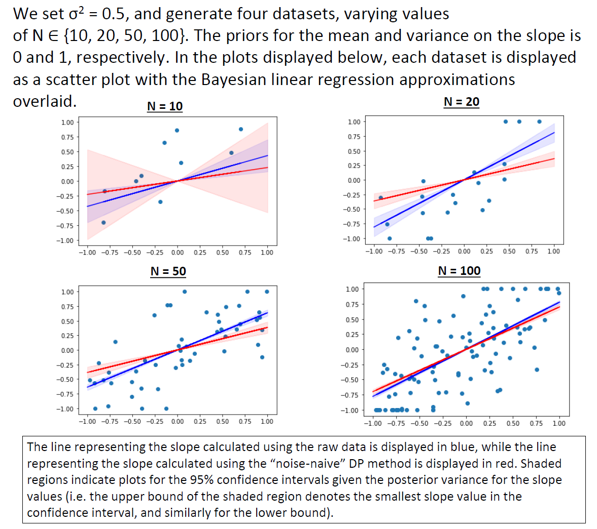
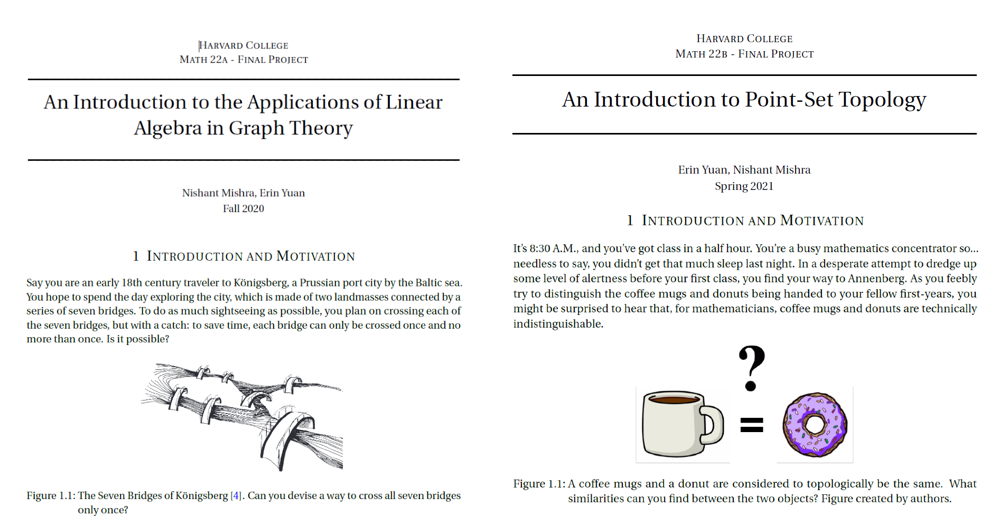

Course Projects
Reading Between Private Lines 🔒
The growing field of differential privacy (DP) offers a framework where potentially-sensitive data can be analyzed in aggregate
while limiting the information that can be known about individual data entries. For my CS 208 final project, I worked with Eric Shen
(Harvard College '24) to dive into ridge, polynomial, lasso and Bayesian regression to provide a review on how each of these techniques
has been modified to satisfy DP in academic literature. We also attempt code implementations (Python) of these techniques and evaluated
their performance on simple datasets to discuss considerations, challenges, and recommendations for them.
Project Poster Project Report


Bridges & Donuts 🌉🍩
In my freshman year at Harvard, I worked on two projects for Math 22,
a year-long proof-based course on the connections between linear algebra and vector calculus. For each project, my partner,
Erin Yuan (Harvard College '24), and I worked to write up a paper, one on graph theory with linear algebra (Fall '20), and the
other on point-set topology with vector calculus (Spring '21). We start both papers by proving abstract theorems, but end with applications
of each topic, whether it was computing the sheer number of paths a traveler could take to reach their destination (graph theory), or classifying
the letters of the alphabet (topology).
Graph Theory Paper Point-Set Topology Paper
Catch 21: Dice 🎲
This started out as my final project for CS50, Harvard's most popular course, with more than 700 students! My partner, Omar Wahby
(Harvard College '24), and I implemented a web application to host a two-player dice game programmed with JavaScript.
The game also features a username and password account system, a personalized game statistics page, and a global leaderboard for users
to see how they stack up against each other, all implemented with SQL and Python. For the front-end, we used HTML5/CSS,
as well as Bootstrap 4. We ended up deploying the website on Heroku, so anyone can make an account, play with friends, and appear
on the leaderboard!
Deployed Site GitHub Repository Video Demo

Asteroid Ambush! 🚀
For my final project for AP Computer Science A, I programmed a 2D space fighter game that has users destroy asteroids and collect coins. The game
features a timer, scoreboard, and life counter. To spice up gameplay, I added four different upgrade paths for the users to take, which can either
grant lives, randomly destroy asteroids, or improve the ray-gun mechanism's rate and scope. The sprites were taken from open source locations on the
internet, and the logic was implemented entirely in Java.
GitHub Repository